相关运维管理工具使用方法：
常用自动化运维工具
PSSH：适用于主机数量很少的环境(基础ssh的key验证)
Ansible:python,Agentless,中小型应用环境(自带代理功能)
Saltstack:python，一般需部署agent，执行效率更高
Puppet:ruby, 功能强大,配置复杂，重型,适合大型环境
Fabric：python，agentless
Chef: ruby,国内应用少
Cfengine
func
特性
最多管理500台主机，更多效率会降低
1. 模块化
Paramiko，PyYAML，Jinja2
2. 支持自定义模块
3. 基于Python语言实现的agentless
4. 基于OpenSSH
5. 支持Playbook任务编排
6. 幂等性，重复执行不会带来意外的情况
7. YAML格式，支持丰富的数据结构
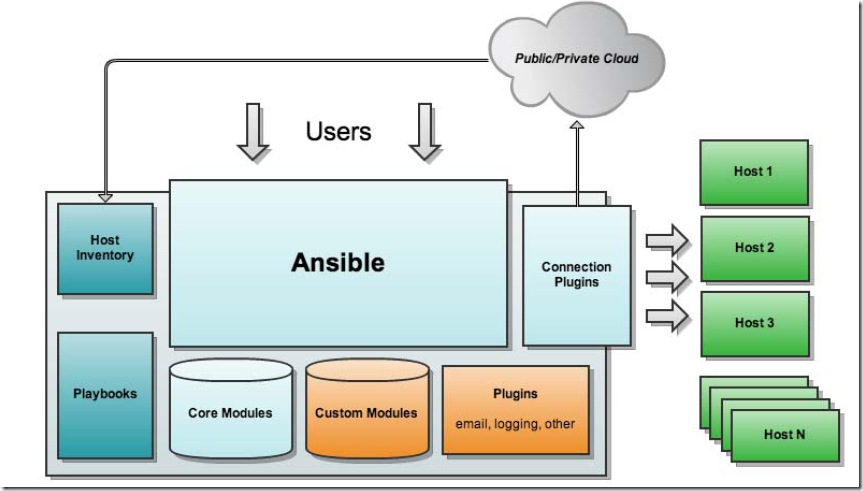
架构
主机清单，HOST Inventory
剧本，Playbook
核心模块，Core Modules
自定义模块，Custom Modules
插件，Plugins
应用程序接口，API
ansible的重要&主要文件
配置文件：
/etc/ansible/ansible.cfg 配置ansible的工作特性
/etc/ansible/hosts 主机清单
/etc/ansible/roles 存放的角色目录
程序文件：
/usr/bin/ansible ansible的可执行命令-->2.7的软链接，都是软链接的思想
/usr/bin/ansible-doc 查看配置文档，模块功能查看工具，man帮助
/usr/bin/ansible-galaxy 下载/上传优秀代码或Roles模块的官网平台
/usr/bin/ansible-playbook 管理执行编排的playbook剧本任务
/usr/bin/ansible-vault 文件加密工具
/usr/bin/ansible-console 基于Console界面与用户交互的执行工具
配置文件
/etc/ansible/ansible.cfg，主配置文件
[defaults]
inventory = /etc/ansible/hosts - 主机列表配置文件
library = /usr/share/my_modules/ - 库文件存放目录
remote_tmp = $HOME/.ansible/tmp -临时py命令文件存放在远程主机目录
local_tmp = $HOME/.ansible/tmp - 本机的临时命令执行目录
forks = 5 - 默认并发数
sudo_user = root - 默认sudo 用户
ask_sudo_pass = True -每次执行ansible命令是否询问ssh密码
ask_pass = True
remote_port = 22
host_key_checking = False -检查对应服务器的host_key，建议取消注释
log_path=/var/log/ansible.log -建议启用日志文件，利于排错
[color] 定义ansible命令的执行结果颜色的
*配置文件说明和建议修改的项
local_tmp和remote_tmp：
本地临时文件和远程临时文件：把playbook转化成python程序，先放在本地
家目录的.ansible/tmp下，然后再通过ssh协议复制到远程主机的.ansible/tmp下，执行完毕后自动删除.
host_key_checking = False -检查对应服务器的host_key，建议取消注释
log_path=/var/log/ansible.log -建议启用日志文件，利于排错
module_name = command -默认使用的命令模块，可以修改成shell
建议修改为：module_name = shell
配置文件只提供默认值，但可以通过playbook的设置进行覆盖
配置文件可以放在/etc/ansible/ansible.cfg中
也可以放到一个工作目录下命名为.ansible.cfg
安装
EPEL源
yum install -y ansible
编译安装：
yum -y install python-jinja2 PyYAML python-paramiko python-babel python-crypto
tar xf ansible-1.5.4.tar.gz
cd ansible-1.5.4
python setup.py build
python setup.py install
mkdir /etc/ansible
cp -r examples/* /etc/ansible
Git方式:
git clone git://github.com/ansible/ansible.git --recursive
cd ./ansible
source ./hacking/env-setup
pip安装： pip是安装Python包的管理器，类似yum
yum install python-pip python-devel
yum install gcc glibc-devel zibl-devel rpm-bulid openssl-devel
pip install --upgrade pip
pip install ansible --upgrade
确认安装： ansible --version
主机清单inventory
/etc/ansible/hosts，主机清单
示例：
[webservs]
192.168.80.40:6868
192.168.80.3:6868
还可以使用列表式主机列表
示例：
[websrvs]
www[0:100].abc.com
[dbsrvs]
ab-[a:f].abc.com
/etc/ansible/roles，角色的目录
Ansible主要操作对象：
HOSTS主机
NETWORKING网络设备
注意事项
执行ansible的主机一般称为主控端，中控，master或堡垒机
主控端Python版本需要2.6或以上
被控端Python版本小于2.4需要安装python-simplejson
被控端如开启SELinux需要安装libselinux-python
windows不能做为主控端
ansible命令执行过程
1. 加载自己的配置文件 默认/etc/ansible/ansible.cfg
2. 加载自己对应的模块文件，如command
3. 通过ansible将模块或命令生成对应的临时py文件，并将该文件传输至远程服务器的对应执行用户$HOME/.ansible/tmp/ansible-tmp-数字/XXX.PY文件
4. 给文件+x执行
5. 执行并返回结果
6. 删除临时py文件，sleep 0退出
执行状态：
绿色：执行成功并且不需要做改变的操作
黄色：执行成功并且对目标主机做变更
红色：执行失败
ansible使用
ansible-doc，查看ansible模块的帮助
-a，显示所有模块的文档
-l，列出所有的模块
-s，以分片查看该模块的帮助
ansible-pull 推送命令至远程，效率无限提升，对运维要求较高
ansible-playbook *.yml 执行相关的剧本文件
-C --check 只检测可能会发生的改变，但不真正执行操作
--list-hosts 列出运行任务的主机
--limit 主机列表 只针对主机列表中的主机执行
-v 显示过程
-vv
-vvv 更详细
ansible-galaxy 已经生成好角色文件
连接 https://galaxy.ansible.com 下载相应的roles
列出所有已安装的galaxy
ansible-galaxy list
安装galaxy
ansible-galaxy install geerlingguy.redis
删除galaxy
ansible-galaxy remove geerlingguy.redis
ansible all --list-hosts 查看所有主机角色
Ansible-vault
功能：管理加密解密yml文件
ansible-vault encrypt hello.yml 加密
ansible-vault decrypt hello.yml 解密
ansible-vault view hello.yml 查看
ansible-vault edit hello.yml 编辑加密文件
ansible-vault rekey hello.yml 修改口令
ansible-vault create new.yml 创建新文件
ansible <HOST-PATTERN> [-m modules -a args]
-k，以密码的形式的验证主机
-all，所有主机清单列表中的主机
-v，查看执行过程
-K，提示输入sudo时的密码
-a，该模块的参数
-C，检查，并不执行
-u，执行远程命令时的用户
Ansible-console：2.0+新增，可交互执行命令，支持tab
root@all (2)[f:5]$
执行用户@当前操作的主机组 (当前组的主机数量)[f:并发数]$
设置并发数： forks n 例如： forks 10
切换组： cd 主机组 例如： cd web
列出当前组主机列表： list
列出所有的内置命令： ?或help
ansible HOST-PATTERN
ALL表示所有清单中的所有主机
ansible all -m ping
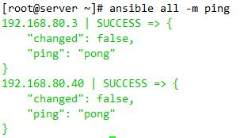
*通配符
ansible 192.168.56.* -m ping
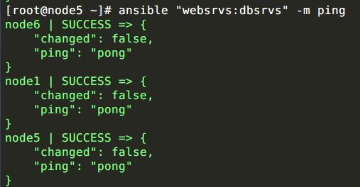
:表示主机清单的中的或的关系
ansible "websrvs:appsrvs" -m ping
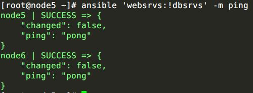
:&表示主机清单中与的关系
ansible "websrvs:&dbsrvs" -m ping
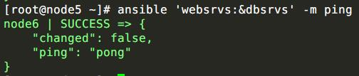
:!表示主机清单内非的关系
ansible 'websrvs:!dbsrvs' -m ping
在websrvs，但不在dbsrvs的主机列表
注意：单使用非的关系时，需要用单引号
常用模块
ping：探测目标主机是否存活
ansible websrvs -m ping
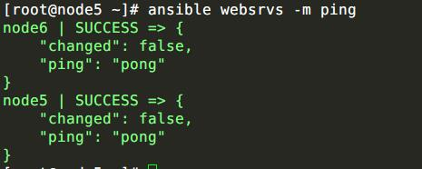
command：在远程主机执行命令；不支持|管道命令 ，（默认模块，可忽略-m选项）
ansible websrvs -m command -a 'COMMAND'
shell：在远程主机上调用shell解释器运行命令，支持shell的各种功能，例如管道等
ansible websrvs -m shell -a 'COMMAND'

注意：command和shell模块的核心参数直接为命令本身；而其它模块的参数通常为“key=value”格式；
script：发送脚本到各被管理节点，并执行。不需要参数
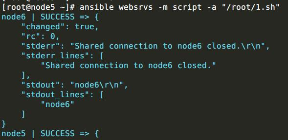
copy：复制文件到远程主机，可以改权限等
src ：本地文件路径，可以是绝对和相对
dest ：不可省，如果src是目录，则dest也是目录。只能是绝对路径
group ：指明文件属组
mode ：指明权限
owner ：指明所有者
content :直接写出内容，并将其复制给远程主机
backup：如果文件事先存在，则创建备份
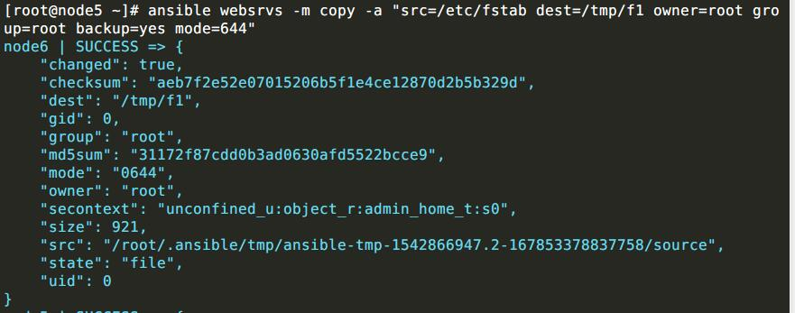
file ：设置文件属性
state：absent，link|hard，file，directory(创建时，需要指定src)，touch
src：指定源
path：指定目标
owner：文件的所有者
group：文件的所属组
mode：文件的权限
backup：如果文件事先存在，则创建备份
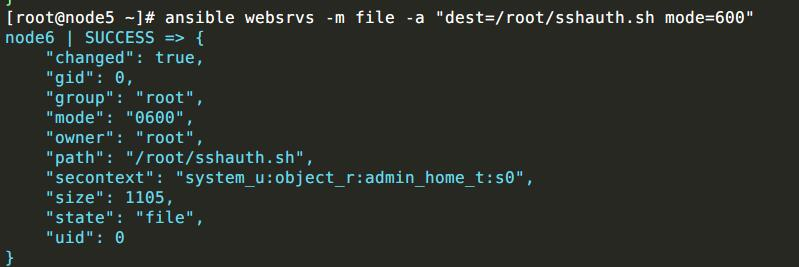
fetch： 从远程某一个主机获取文件到本地
dest：服务器端的保存路径
src：客户端的源文件路径

cron: 管理cron计划任务
minute
hour
day
month
weekday
name：任务计划的名称
disable：true|False
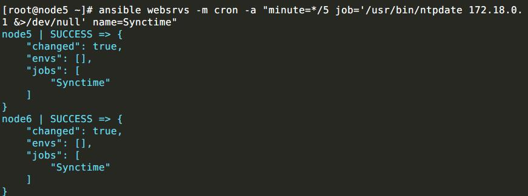
yum：yum安装软件，也有apt,zypper
state：latest（创建），absent（删除）
name：指定需要安装或者卸载的程序的名称，多个程序之间用,隔开
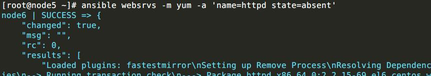
service: 服务程序管理
name：指定的服务的名称，只能是单个服务
enabled：yes|no，指定服务是否开机自启
state：started，stopped，reloaded，restarted
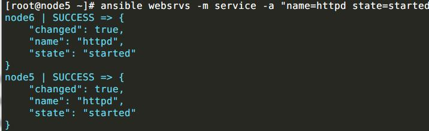
group: 组管理
name：组的名称
gid：组的gid
state：present（创建，默认选项），absent（删除）
system：yes，创建系统组
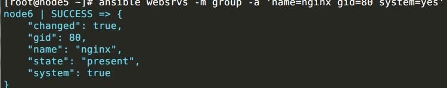
User:用户管理
name：账号的名称
uid：账号的uid
home：账号的家目录
password：指定账号的密码
state：absent，present
remove：yes，删除时同时删除其家目录
shell：指定用户的shell
system：yes，创建系统账号
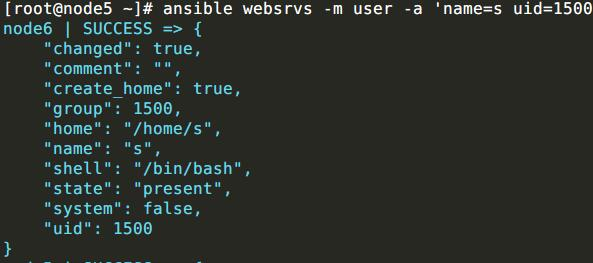
hostname:主机名
name：主机名
template：模板
用于将模版文件渲染后，输出到远程主机上，模版文件一般以.j2为结尾，标识其是一个jinja2模版文件
- src：模版文件的路径
- dest：拷贝到远程主机上的位置
- mode：权限
- attributes: 特殊权限 类似于 chattr
- force：存在覆盖
- group：属组
- owner：属主
ansible playbook
playbook是由一个或多个“play”组成的列表
Playbook采用YAML语言编写
playbook核心元素：
Host 执行远程主机列表
Tasks 任务集
Varniables 内置变量或自定义变量在playbook中调用
Template 模板
Handlers和notify结合使用，由特定条件触发操作，满足条件方才执行，否则不执行
tags 标签选择性运行playbook部分代码
playbook基础组件：
Host 主机用于指定要执行任务的主机
remote_user：可用于Host和task中，也可使用sudo方式在远程主机执行任务
示例：
- hosts: websrvs
remote_user: root
task和action
主机部分是task list，task list各任务按次序逐个在hosts中指定的所有主机上执行
每个task都应该有其name
tasks的格式
1. action: module arguments
2. module: arguments
注意：shell和command模块后面跟命令，而非key=value
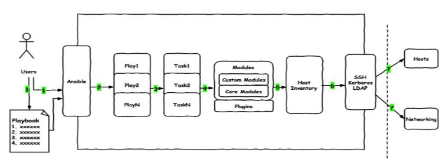
语法简介
1.在单一档案中，可用连续三个连字号(——)区分多个档案。另外，还有选择性的连续三个点号(... )用来表示档案结尾
2. 次行开始正常写Playbook的内容，一般建议写明该Playbook的功能
3.使用#号注释代码
4.缩进必须是统一的，不能空格和tab混用
5.缩进的级别也必须是一致的，同样的缩进代表同样的级别，程序判别配置的级别是通过缩进结合换行来实现的
6.YAML文件内容是区别大小写的，k/v的值均需大小写敏感
7.k/v的值可同行写也可换行写。同行使用:分隔 v可是个字符串，也可是另一个列表
8. 一个完整的代码块功能需最少元素需包括 name: task
9.一个name只能包括一个task
10.YAML文件扩展名通常为yml或yaml
1 | --- |
handlers和notify结合使用触发条件
1 | --- |
Playbook中tags使用
1 | --- |
ansible-playbook -t conf test.yml
Playbook中变量使用
变量名：仅能由字母、数字和下划线组成，且只能以字母开头
变量来源：
1.facts是由正在通信的远程目标主机发回的信息，这些信息被保存在ansible变量中。要获取指定的远程主机所支持的所有facts，可使用如下命令进行：
ansible hostname -m setup
1 | - hosts: webser |
2.register(注册器)
把任务的输入定义为变量，然后用于其它任务
task：
- shell：/usr/bin/foo
register: foo_result
ignore_errors: True
- name: test
shell: echo ‘hello world'
when: foo_result.success # wen条件判断foo_result
3.在/etc/ansible/hosts中定义
普通变量：主机组中主机单独定义，优先级高于公共变量
1 | vim /etc/ansible/hosts |
公共（组）变量：针对主机组中所有主机定义统一变
1 | [websrvs] |
4.通过命令行指定变量，优先级最高
1 | - hosts: webser |
ansible-playbook -e filename=test test1.yml
5.在playbook中定义 vars:
- var1: value1
- var2: value2
1 | - hosts: webser |
6.在独立的变量YAML文件中定义
1 | cat vars.yml |
7.在role中定义
给一个主机应用角色的时候可以传递变量，然后在角色内使用这些变量，示例如下：
- hosts: webservers
roles:
- common
- { role: foo_app_instance, dir: '/web/htdocs/a.com', port: 8080 }
注意：
ansible中变量的优先级
extra vars （-e 选项指定的变量）最高
inventory 主机清单中定义的变量（ansible_ssh_user等)
vars_files自定义的变量
play剧本中vars
系统的facts变量
角色定义的默认变量 最低
从上到下优先级逐渐降低，高优先级会覆盖掉低优先级的变量
变量定义：
key=value
示例：http_port=80
变量调用
通过{{ variable_name }} 调用变量，且变量名前后必须有空格，有时用 “{{variable_name }}”才生效
模板templates
Jinja2语言，使用字面量，有下面形式
字符串：使用单引号或双引号
数字：整数，浮点数
列表：[item1,item2,...]
元组：(item1,item2...)
字典：{key:value1,key:value2,...}
布尔型：true/false
算术运算：
+
把两个对象加到一起。通常对象是素质，但是如果两者是字符串或列表，你可以用这种方式来衔接它们。无论如何这不是首选的连接字符串的方式！连接字符串见 ~ 运算符。 {{ 1 + 1 }} 等于 2 。
-
用第一个数减去第二个数。 {{ 3 - 2 }} 等于 1 。
/
对两个数做除法。返回值会是一个浮点数。 {{ 1 / 2 }} 等于 {{ 0.5 }} 。
//
对两个数做除法，返回整数商。 {{ 20 // 7 }} 等于 2 。
%
计算整数除法的余数。 {{ 11 % 7 }} 等于 4 。
*
用右边的数乘左边的操作数。 {{ 2 * 2 }}会返回4。也可以用于重复一个字符串多次。 {{ ‘=’ * 80 }}会打印 80 个等号的横条。
**
取左操作数的右操作数次幂。 {{ 2**3 }} 会返回 8
比较操作：
==
比较两个对象是否相等。
!=
比较两个对象是否不等。
>
如果左边大于右边，返回 true 。
>=
如果左边大于等于右边，返回 true 。
<
如果左边小于右边，返回 true 。
<=
如果左边小于等于右边，返回 true 。
逻辑运算：
对于 if 语句，在 for 过滤或 if 表达式中，它可以用于联合多个表达式:
and
如果左操作数和右操作数同为真，返回 true 。
or
如果左操作数和右操作数有一个为真，返回 true 。
not
对一个表达式取反（见下）。
(expr)
表达式组。
流表达式：For If When
templates功能：根据模块文件动态生成对应的配置文件
templates文件必须存放于templates目录下，且命名为.j2结尾
yml文件须和templates目录平级
1 | . |
示例：1
2
3
4
5
6vim temnginx.yml
- hosts: websrvs
remote_user: root
tasks:
- name: template config to remote hosts
template: src=nginx.conf.j2 dest=/etc/nginx/nginx.conf
ansible-playbook temnginx.yml
使用template变更替换
1 | cat nginx.conf.j2 |
算数运算
1 | vim nginx.conf.j2 |
when
条件测试:如果需要根据变量、 facts或此前任务的执行结果来做为某task执行与否
示例：
tasks:
- name： Install mysql-server
yum： name=mariadb-server state=present
when: ansible_distribution_major_version == "7"
迭代
对迭代项的引用，固定变量名为"item"
要在task中使用with——items给定要迭代的元素列表
列表格式：
字符串
字典
示例：
- name: add groups
group: name={{ item }} state=present
- with_items:
- test1
- test2
- name:
user: name={{ item.name }} group={{ item.group }} state=present
- with_items:
- { name: 'user1', group:'test1' }
- { name: 'user2', group:'test2' }
上面语句的功能等同于下面的语句：
- name: add user testuser1
user: name=user1 state=present groups=test1
- name: add user testuser2
user: name=user2 state=present groups=test2
for if
cat tmeplates/test.conf.j2
{% for vhost in vhosts %}
server {
listen {{ vhost.listen }}
{%if vhost.host_name is defined %}
server_name {{ vhost.host_name }}
{%endif%}
root {{ vhost.dirname }}
}
{% endfor %}
cat test_for.yml
- hosts: appsrvs
remote_user: root
vars:
vhosts:
- host1:
listen: 81
host_name: www.a.com
dirname: /data/www1
- host2:
listen: 82
dirname: /data/www2
tasks:
- name: template
template: src=test.conf.j2 dest=/data/test_for.conf
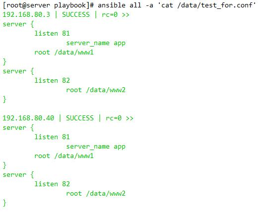
roles
常见的目录结构
nginx.yml //调用该角色需使用的文件
roles/
├── nginx //角色的名称
│ ├── files //存放copy或script等模块调用用到的文件
│ ├── handlers //至少包含一个main.yml文件，用来存放notify触发条件的文件
│ ├── tasks//至少应该包含一个名为main.yml的文件，是该角色执行任务的基本元素
│ ├── templates //存放模板模块所需要用到的文件的路径
│ └── vars //存放该角色所需要的变量的文件，至少包含一个main.yml文件
执行调用role：
cat nginx.yml
- hosts: websrv
remote_user: root
roles:
- role: nginx
也可以向roles传递参数，例如：
---
- hosts: webservers
roles:
- common
- { role: foo_app_instance, dir: '/opt/a', port: 5000 }
- { role: foo_app_instance, dir: '/opt/b', port: 5001 }
甚至也可以条件式地使用roles，例如：
---
- hosts: webservers
roles:
- { role: some_role, when: "ansible_os_family == 'RedHat'" }
完整的roles架构
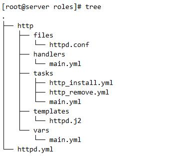
cat handlers/main.yml
- name: restart
service: name=httpd state=restarted
cat tasks/http_install.yml
- name: install
yum: name=httpd
- name: template
template: src=httpd.j2 dest=/etc/httpd/conf/httpd.conf
tags:
- install
notify:
- restart
- name: start
service: name=httpd state=started
cat tasks/http_remove.yml
- name: remove
yum: name=httpd state=absent
tags:
- remove
cat tasks/main.yml
- include: http_install.yml
- include: http_remove.yml
cat templates/httpd.j2
#Listen 12.34.56.78:80
Listen {{ http_port }}
cat vars/main.yml
http_port: 8080
roles playbook tags使用
tags用于让用户选择运行playbook中的部分代码。ansible具有幂等性，因此会自动跳过没有变化的部分，即便如此，有些代码为测试其确实没有发生变化的时间依然会非常地长。此时，如果确信其没有变化，就可以通过tags跳过此些代码片断。
cat nginx.yml
- hosts: websrv
remote_user: root
roles:
- { role: nginx,tags: [ 'nginx','web' ] ,when: ansible_distribution_major_version == "6“ }
- { role: httpd,tags: [ 'httpd','web' ] }
- { role: mysql,tags: [ 'mysql','db' ] }
- { role: marridb,tags: [ 'mysql','db' ] }